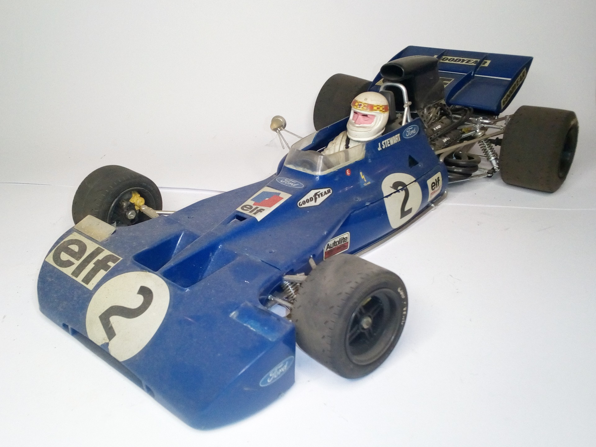

Auto e veicoli stradali · scale model archive
Tyrrel 004 1971 F1 world champion, driver Jackie Stewart
Tyrrel 004 1971 F1 world champion, driver Jackie Stewart — Kit: Tamiya, Scale: 1/12. bought in 1972, its price at that time was 3.5 Euros!! #1/12 'Tamiya

Photo gallery
English description
bought in 1972, its price at that time was 3.5 Euros!!
#1/12 'Tamiya
Descrizione italiana
bought in 1972, its price una quell’epoca fu 3.5 Euros!!
#1/12 'Tamiya.